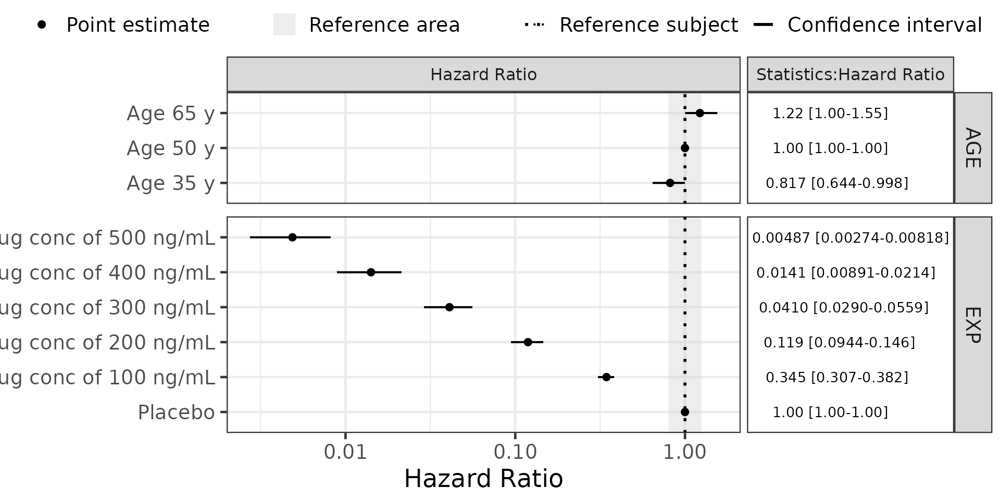
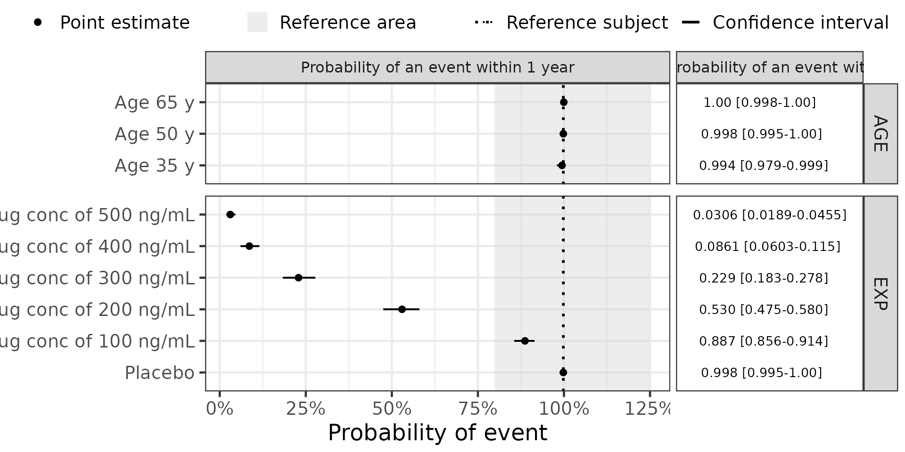

Creating Forest plots for tte models
Creating_Forest_plots_for_tte_models.Rmd
packageName <- "PMXForest"
suppressPackageStartupMessages(library(packageName,character.only = TRUE))
library(tools)
library(ggplot2)
library(stats)
theme_set(theme_bw(base_size=18))
theme_update(plot.title = element_text(hjust = 0.5))
set.seed(865765)Introduction
This vignette goes through the steps of creating a Forest plots using a Time-To-Event (TTE) model. In principle, the idea is similar to a Forest plot using any other type of data/model but in this particular case the Forest plot illustrates Hazard Ratios (HR) and probability of an event within one year, assuming that the covariate effects in the TTE model has been added as proportional hazards to the base model, i.e \(h_0(t) \cdot e^{(COV1+COV2...)}\)
In this example, the forest plot will be of the SCM parametric type and the uncertainty will come from either a bootstrap sample or sampling from a covariance matrix.
Creating parametric Forest plots from scmplus models
Overall, there are three sets of required specifications needed:
- The covariate values of interest needs to be specified (Section @ref(sec:dfCovs)).
- The model for the primary and/or secondary parameters need to be implemented in R functions (Section @ref(sec:paramFunction)).
- The multivariate distribution of the primary parameters needs to be derived (Section @ref(sec:multivariateDist)).
With these specifications the data for the Forest plot can be setup (using the function getForestDFSCM, see Section @ref(sec:setUpDataPar)) and the Forest plot created (see Section @ref(sec:createForest)).
Define the covariates to include in the Forest plot
This specification has one required and two optional components.
The required specification is the list of covariate values to predict the parameter for. It is created using a helper function (createInputForestData)
dfCovs <- createInputForestData(
list( "AGE" = c(35,50,65),
"EXP" = c(0,100,200,300,400,500)),
iMiss=-99) The data.frame dfCovs specifies the covariate values, or combination of values to visualize in the Forest plot. Each line if dfCovs correspond to one “row” in the Forest plot.
#> AGE EXP COVARIATEGROUPS
#> 1 35 -99 AGE
#> 2 50 -99 AGE
#> 3 65 -99 AGE
#> 4 -99 0 EXP
#> 5 -99 100 EXP
#> 6 -99 200 EXP
#> 7 -99 300 EXP
#> 8 -99 400 EXP
#> 9 -99 500 EXPThe structure of the dfCovs list determines how the covariate values are grouped on the y-axis. For example, the structure above would group AGE 35, 50 and 65 years and, EXP 0,100,200,300,400,500 ng/mL, and the groups will be slightly separated from each other in the plot.
The cdfCovsNames argument to getForestDFSCM is optional and specifies a name to be used for each row in dfCovs. If not provided, the original covariate names (e.g. AGEand EXP) will be used on the y-axis in the Forest plot.
covnames <- c("Age 35 y","Age 50 y","Age 65 y","Placebo","Drug conc of 100 ng/mL","Drug conc of 200 ng/mL","Drug conc of 300 ng/mL","Drug conc of 400 ng/mL","Drug conc of 500 ng/mL")The reference subject will be a subject with and Age of 50 year in the placebo group (exposure of 0 ng/mL).
dfRefRow <- data.frame("AGE"=50,"EXP"=0)Define the model function
The functionList argument to getForestDFSCM is a list of functions that computes the parameters to plot in the Forest plot from the NONMEM parameter estimates. More than one function can be provided but only the case with one function is covered in this document. However, in this example two different functions are used in order to easily provide different x-scales for the HR versus and probability of events.
It is worth pointing out that this is a fragile part of the process of creating Forest plots with the PMXForest package. The user needs to specify the function to derive the parameter of interest, not seldom duplicating code already specified in NONMEM. Please be careful.
For TTE models the parameterization of the distribution (Weibull in this example) might differ and a crucial part is to transform between the NONMEM parameterization and the parameterization used in R for the distribution used. This is important for the probabilities of events. For the hazard ratios the parameterization usually do not come into play.
The most general approach is to (re-)define the NONMEM model for the typical individual parameters. The functions below defines the HR for Age and Exp as well as the probability of events within one year.
These function will be called once for each row in dfCovs and each parameter set in the dfSamples* data frames (see below), and for dfRefRow, and it will use the available covariate columns and the values in those columns. This means that we need to handle the case when a covariate is not be present in dfCovs as well as the -99s. Note that there will be -99s in dfCovs even if there are no missing covariate values in the NONMEM data set. If the NONMEM code doesn’t handle -99s, the code in the function here needs to be adjusted.
The parameter functions will have to accept a vector of fixed effects parameter estimates (thetas) and a one row data frame with covariate values. Other arguments provided by the user to getForestDFSCM will also be passed to the parameter functions, see the paramFunctionCDF for an example. Note in the example below that the paramFunctionCDF calls the HR function paramFunctionHR.
Here is a general procedure for implementing the NONMEM code in the R function:
- Copy the relevant parts of the NONMEM model file to the function.
- Translate the NONMEM code to R:
- Replace NONMEM’s
THETA()with R’stheta[]. - Replace NONMEM’s
EQ(etc) with the corresponding R equivalent. - Other modifications as needed, e.g
LOG->log
- Replace NONMEM’s
- Make sure that the code handles missing covariate values (-99). * Note! This is needed even if the original NONMEM code didn’t do this.*
- Make sure that the code handles the case when the input data.frame (
df) does not include columns for all covariates in the model. (See theany(names(df))below.)
#Hazard ratio (compare to the reference subject) parameter function
paramFunctionHR <- function(thetas, df, ...) {
# Risk factors / covariates section
RF<-0
if(any(names(df) == "AGE") && df$AGE!=-99) {
RF<-RF+(df$AGE-50)*thetas[3]
}
# Drug /exposure effect section
EFF<-0
if(any(names(df) == "EXP") && df$EXP!=-99) {
EFF<-thetas[4]*df$EXP
}
#Hazard ratio given the covariates and exposure
HR<-exp(RF+EFF)
return(HR)
}
#Probability of having an event up until time=TIME
paramFunctionCDF <- function(thetas, df, functHR,TIME, ...) {
#The HR (exponentiated covariate and exposure effects)
COV<-functHR(thetas,df,...)
#Re-parameterize the model to fit the pweibull parameterization
#Note that this is dependent on the parameterization used in the model
TH1 <- 1/thetas[1]
TH2 <- thetas[2]
LAM <- ((1/COV)^(1/TH2))*TH1
#Get the probability of having an event up until time TIME (CDF)
F <- pweibull(TIME,TH2,LAM)
return (F)
}We also need to provide names for the output from the functions.
Obtain the multivariate distribution of the primary parameters
The getForestDFSCM package supports several methods for obtaining the uncertainties in the predicted parameter values. Most of them require information from the .ext file.
runno <- "tte_weibull"
extFile <- system.file("extdata","tte",paste0(runno,".ext"),package=packageName)Use the output from the $COV step in NONMEM
This approach will sample parameter vectors from a variance-covariance matrix from NONMEM, n=200.
Read the cov file and get the multivariate parameter distribution. Note that since this is a TTE model without random effects, the OMEGA and SIGMA samples are set to zero.
covFile <- system.file("extdata","tte",paste0(runno,".cov"),package=packageName)
dfSamplesCOV <- getSamples(covFile,extFile=extFile,n=200)Use the output from a bootstrap
This approach obtain the confidence interval limits non-parametrically from a (n=500) bootstrap.
bootFile <- system.file("extdata","tte","bootstrap_tte_weibull_n500",paste0("raw_results_",runno,".csv"),package=packageName)
dfSamplesBS <- getSamples(bootFile,extFile=extFile)Set up the data for the Forest plot
The actual data to be plotted is assembled by the getForestDFSCM function. In addition to the information assembled above one additional argument is required - the number of fixed effects in the NONMEM model (noBaseThetas).
Below is the call to calculate the forest plot data using the samples from the bootstrap dfSamplesBS. This could easily be changed to the covariance samples dfSamplesCov instead. Further note that extra parameters (functHR and TIME) are provided to the probability of event function paramFunctionCDF.
#Hazard ratio forest data
dfresHR <- getForestDFSCM(dfCovs = dfCovs,
cdfCovsNames = covnames,
functionList = list(paramFunctionHR),
functionListName = functionListNameHR,
noBaseThetas = 4,
dfParameters = dfSamplesBS,
dfRefRow = dfRefRow,
cstrPackages = c("dplyr"))
#Probability of event within one year forest data
dfresCDF <- getForestDFSCM(dfCovs = dfCovs,
cdfCovsNames = covnames,
functionList = list(paramFunctionCDF),
functionListName = functionListNameCDF,
noBaseThetas = 4,
dfParameters = dfSamplesBS,
dfRefRow = dfRefRow,
cstrPackages = c("dplyr","stats"),
functHR=paramFunctionHR,
TIME=365)Create the Forest plot
Forest plot over hazard ratios
The Forest plots below displays the data on an absolute scale which is similar to the relative scale since it’s hazard ratios, with the reference being defined in the dfRefRow data.frame. The plotForestDF function returns a ggplot object so any regular ggplot additions can easily be made. The x-axis is also logged (log10) so that the distance between the reference and half the effect (HR=0.5) or the double effect (HR=2) is similar.
plotList<-forestPlot(dfresHR,
plotRelative = FALSE,
xlb = "Hazard Ratio",
return = "plotList",
sigdigits = 3,
strip_top_size = 12)
#Add the log10 x-axis
plotList[[1]]<-plotList[[1]]+scale_x_continuous(trans='log10')
p1 <- ggpubr::ggarrange(plotlist = plotList,
ncol = 2,
nrow = 1,
widths = c(2,0.7),
align ="h",
common.legend = T)
print(p1)
Forest plot over probability of event within a year
The Forest plots below displays the data on the absolute scale (probabilities) with the reference being defined in the dfRefRow data.frame. The plotForestDF function returns a ggplot object so any regular ggplot additions can easily be made, such as changing the xlim and transforming the x-axis scale to percent.
plotList<-forestPlot(dfresCDF,
plotRelative = FALSE,
xlb = "Probability of event",
return ="plotList",
sigdigits = 3,
strip_top_size = 12,
statisticsLabel = "Statistics")
#Add the Percent x-axis
plotList[[1]]<-plotList[[1]]+scale_x_continuous(labels = scales::percent)
ggpubr::ggarrange(plotlist = plotList,
ncol = 2,
nrow = 1,
widths = c(2,0.7),
align ="h",
common.legend = T)